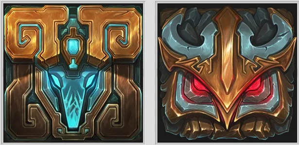

League of Legends es un juego de estrategia en tiempo real que se juega en un mapa Por el mundo de league of legendes han pasado muchos mapas incluyendo sus modo de juego por ende aqui haremos un repaso de todos los mapas y modos de juego que han existido en el lol. En League of Legends, los mapas son entornos donde se desarrollan las partidas. Cada mapa tiene su propio diseño y características, lo que afecta la jugabilidad y la estrategia de los jugadores. A continuación, se presentan algunos de los mapas más importantes en League of Legends: